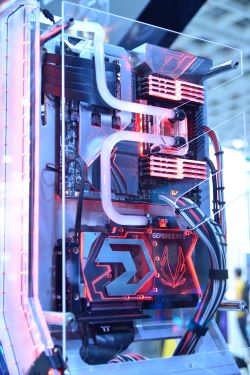

Summary
Building your own computer can be a rewarding and cost-effective endeavor. It allows you to customize the components based on your specific needs and preferences, ensuring that the computer aligns perfectly with your intended use, whether it's for gaming, content creation, or everyday tasks. Additionally, assembling your own PC provides a valuable learning experience, deepening your understanding of computer hardware and fostering a sense of accomplishment. Many enthusiasts find joy in the process of selecting compatible parts, putting them together, and troubleshooting any issues that may arise. Moreover, building a computer from scratch often proves more cost-effective than purchasing a pre-built system with similar specifications, as it allows you to allocate your budget where it matters most to you. Overall, building your own computer provides a level of personalization, knowledge, and satisfaction that may not be achieved with off-the-shelf alternatives.
What do the parts do?
A computer comprises several interconnected components, each playing a crucial role in its overall functionality. The central processing unit (CPU) acts as the brain, executing instructions and processing data. RAM (Random Access Memory) provides temporary storage for actively used data and programs, facilitating quick access for the CPU. Storage devices, such as hard drives or solid-state drives, store data persistently even when the computer is powered off. The motherboard serves as the central hub, connecting all components and facilitating communication between them. Input devices, like keyboards and mice, allow users to interact with the computer, while output devices, such as monitors and printers, display information or produce tangible outputs. The graphics processing unit (GPU) specializes in rendering images and videos, crucial for gaming and multimedia tasks. The power supply unit (PSU) converts electrical power from an outlet into a usable form for the computer's components. Networking components, like Ethernet or Wi-Fi adapters, enable communication with other devices and the internet. Finally, the operating system serves as the interface between the user and the computer, managing resources and coordinating various processes to ensure a seamless user experience. Together, these components form a complex and interconnected system that enables the computer to perform a wide array of tasks.
